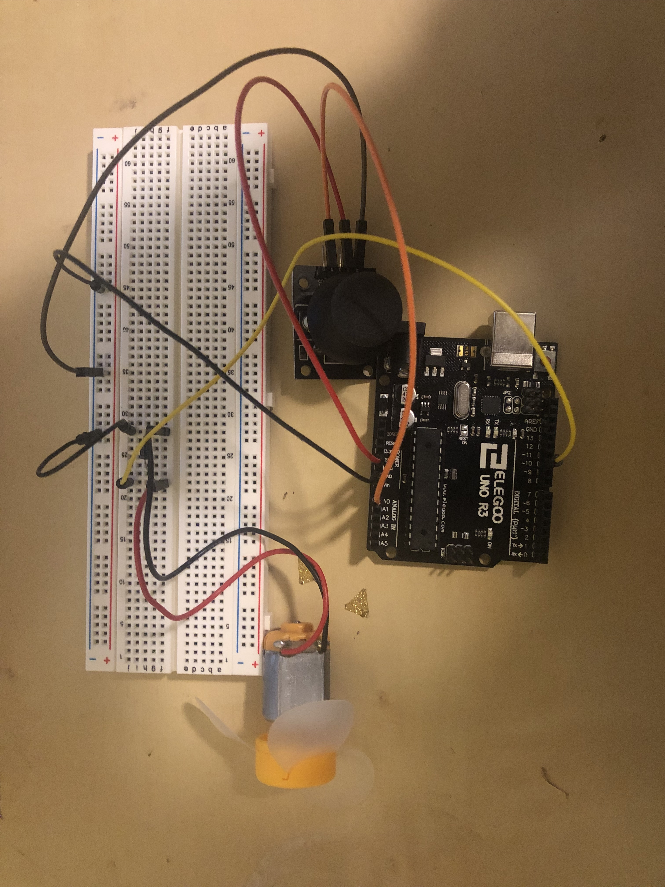

Assignment 5: Motors!
Sahana Vishwanath
This page shows all the documentation for assignment 5.
The following picture shows the schematic for this assignment:

This schematic uses one motor, a joystick, and a flyback diode.
The following picture shows the circuit for this assignment:

The following code shows the firmware for this assignment:
// analog input pin that reads y value
int yPin = A0;
// value read by the motor
int yValue = 0;
// value output to the motor
int outputValue = 0;
// output pin that motor is connected to
int motorPin = 10;
void setup() {
// set motorPin 10 as an output
pinMode(motorPin, OUTPUT);
// initialize serial communications at 9600 bps
Serial.begin(9600);
}
void loop() {
// read the analog in value
yValue = analogRead(yPin);
// prints 'The y value is ' to the serial monitor
Serial.print("The y value is ");
// prints the y value to the serial monitor
Serial.println(yValue);
// map the yValue to the range of the analog out
outputValue = map(yValue, 0, 1023, 100, 255);
// set motor speed to the motorValue
analogWrite(motor, motorVal);
// wait 30 milliseconds before the next loop starts
delay(15);
}
The comments in the above code describe each line of in the above code in detail. The code initializes various variables as well as sets certain output and input pins. The code then runs through a loop that changes the speed of the motor depending on a specific value.
The following gif shows the operation of the circuit for this assignment:

The gif above shows how the circuit operates. When I push the joystick upwards, the motor stops spinning. When the joystick is at the neutral middle position, the motor spins slowly, and when it is pushed down, the motor spins fast.